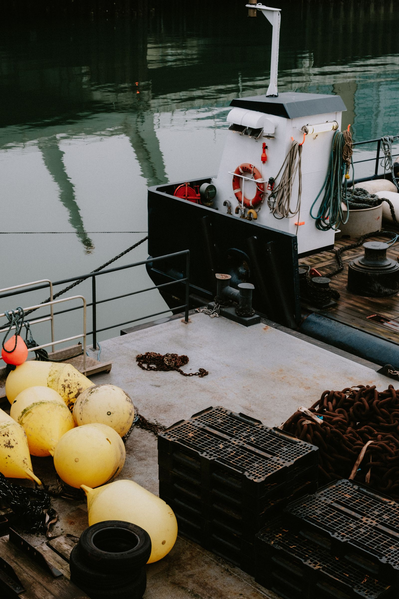

The analyst · Dr Inês Duarte
Trained to listen for submarines. Retained to listen for everything else.

Inês Duarte spent six years as a sonar operator in the Portuguese Navy, on frigates out of Lisbon, learning the trade the hard way: a watch is long, the ocean is louder than the target, and the cost of a confident mistake is not abstract.
She left the Navy to read marine biology at the University of the Azores, then took a master's in underwater acoustics — the deliberate joining of the two halves of this work: what the animal is doing, and what the water does to its voice on the way to the hydrophone. Since 2013 she has practised independently from Horta, on Faial, in the middle of the Atlantic shipping and whale country she grew up listening to.
The practice is deliberately small: one analyst, a pool of trained watch-keepers for real-time campaigns, and a bench of calibrated recorders. Programmes are taken one or two at a time, because analysis done at production-line speed is how false trends get published. She holds MMO and PAM operator certification, has served as the acoustic reviewer on consent examinations, and teaches the propagation module — the arithmetic on this site's home page — to junior consultants twice a year.
Her standing rule, printed in every report: "I have never signed a report that said 'no animals were present'. I have signed many that said 'we did not hear any — and here is exactly how deaf we were.'" Clients who need the first kind of sentence hire someone else, and are told so at the first meeting.
The method · Five entries, in order
How a programme runs
The order is the discipline: nobody deploys a hydrophone for this practice before the range has been modelled, and nobody publishes a detection before the detector has been graded.
Listen to the brief
The site, the species of concern, and the question the regulator is actually asking — which is often narrower, and more answerable, than the question in the tender. If the honest answer is "acoustics cannot carry that question", it is given here, free, before any rate card appears.
Model before you moor
A propagation study on stated figures: source levels, absorption, the site's ambient bands by season. Detection ranges are printed with their conditions attached, and the array is drawn around the pessimistic range, not the brochure one — see Case file 01.
Deploy, calibrate, log the health
Recorders are calibrated before and after every deployment. Duty cycles, battery state, tilt, biofouling and every gap in the record go into a health-check log that travels with the data — because a gap explained is evidence, and a gap discovered later is a scandal.
Analyse to a printed standard
Detectors are validated against hand-checked subsamples before they are trusted with the full dataset, and their false-positive and false-negative rates are printed in the report. Any analyst can produce detections; the standard is knowing what fraction of them to believe.
Report what the data carries
Findings are graded: what the data shows, what it suggests, and what it cannot say. The third list is never empty and never hidden — it is usually the most useful page in the report, because it tells the client what to measure next, or what to stop claiming.
The honesty page · Read before commissioning
Four things this practice will not do
These are not disclaimers. They are the terms on which the work is worth paying for, and each one has cost a client a comfortable sentence at least once.
Rule 01Silence is never reported as absence
A detection is not a census, and a non-detection is not an empty sea. Acoustics hears animals that vocalise, within a range set by weather, shipping and season. Reports from this practice state the detection probability alongside every zero — "we did not hear any, and here is exactly how deaf we were" — because a consent decision built on an unqualified zero is built on nothing.
Rule 02A quiet hydrophone is a suspect, not a result
Hydrophones flood, tilt, foul, run out of battery and get eaten by the mooring they hang from. A silent channel is treated as a finding about the instrument until the health-check log proves otherwise — calibration records and duty-cycle logs are part of the deliverable precisely so that "quiet" can be told from "broken" without taking anyone's word for it.
Rule 03Ranges are printed with their weather on
Every detection range in every report carries its conditions: the ambient band, the season, the source-level basis. A range quoted from a brochure figure and a calm-sea assumption is not a range, it is a hope — and the most expensive sentence in marine consultancy is "the model says the range is fine", spoken the month before the measured one arrives.
Rule 04The stop-work authority is agreed before mobilisation
On construction monitoring, the authority to stop work on a detection is written into the contract before anyone sails — including who may restart, and after what clearance. An authority negotiated during the incident is not an authority. If a client will not sign it, this practice will still take the survey work, but will not put its name on the mitigation.
Engagement terms · The small print, large
Terms, availability, and who owns what
Basis of fees
All work is quoted from the printed rate card (home page, Table 4) as days and hire lines, with a fixed figure after a site call. Vessel time beyond a harbour workboat is the client's cost or a shared charter, stated in the quote. The conclusion of a study is never a price factor.
Data & recordings
Recordings and data belong to the client. The analysis settings, validation subsamples and health-check logs are archived with the report, so any competent analyst can reproduce — or challenge — the findings. Open datasets are published with the detector settings attached, as in Case file 03.
Availability
Currently booking: baseline surveys for the autumn window (deployments from September), and one real-time monitoring slot in the spring campaign season. Detector-validation audits (PAM-05) are waitlisted until winter. Long-term moorings are taken on three-year terms, one new mooring per year.
Where the work happens
Based in Horta, Faial, and working across the North Atlantic — the Azores, mainland Portugal, and by arrangement the wider European Atlantic margin. Analysis and reporting are done from Horta; the sea time is wherever the site is.